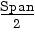
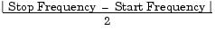

FREQuency:CENTer {<frequency>|MINimum|MAXimum}
FREQuency:CENTer? [MINimum|MAXimum]Set the center frequency (used in conjunction with the frequency span). Select from 1 mHz to 80 MHz (limited to 1 MHz for ramps and 25 MHz for arbitrary waveforms). The default is 550 Hz. MIN = 1 mHz. MAX = based on the frequency span and maximum frequency for the selected function as shown below. The :CENT? query returns the center frequency in hertz.
Center Frequency (max) = Max. Frequency - · The following equation shows the relationship between the center frequency and the start / stop frequency.
Center Frequency = 